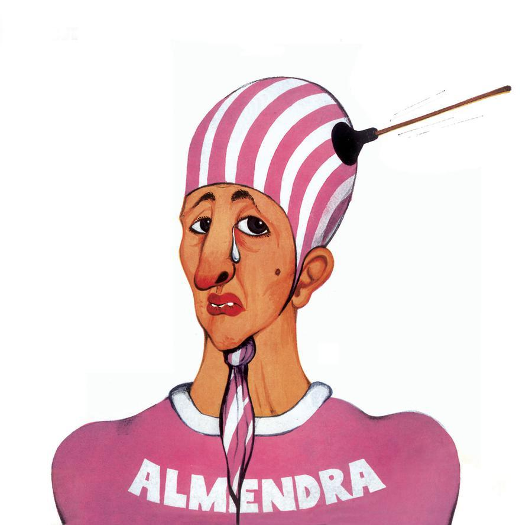
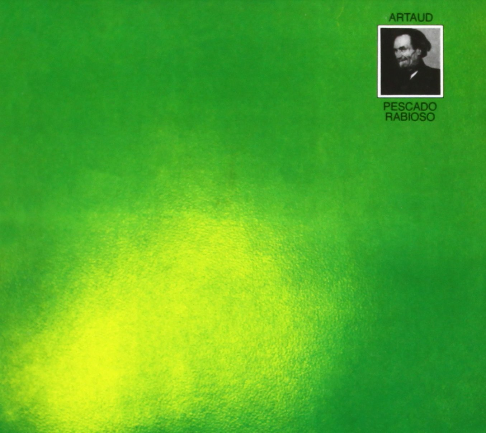
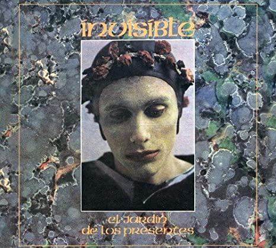
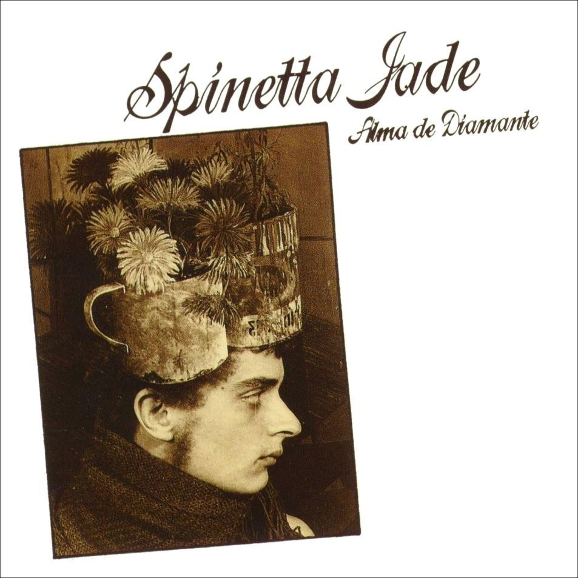
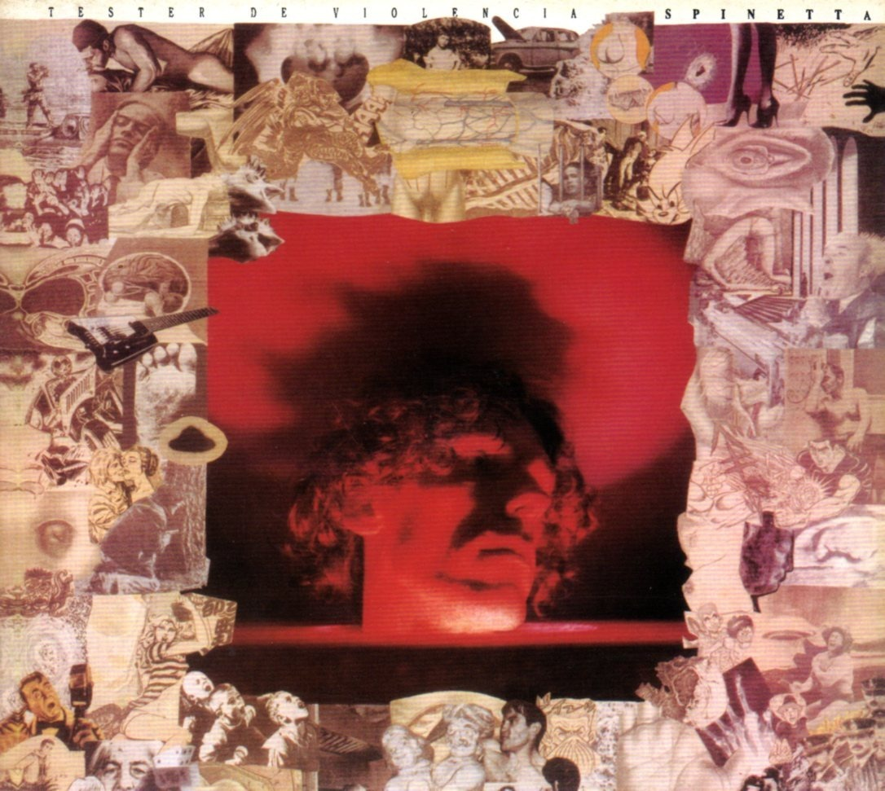

Lo que nos ocupa es esas abuela, la conciencia que regula el mundo
Mundo Spinetta
Perfil
¿Qué canción querés escuchar hoy?


Almendra
1969



Artaud
1973

El Jardín de los Presentes
1976

Alma de Diamante
1980

Tester de Violencia
1988
"La premisa es dar todo de nosotros... y menos cáscara."
"Hay un tiempo para la murga, la pachanga, y todas las cosas que les gusten, ¿ok? Pero hay otro momento en donde tienen que proteger a sus propios amigos, y no ser enemigos potenciales a muerte, por ejemplo... El mensaje es ese. Cuidá al que tenés al lado. Es tu amigo, puede ser tu hermano, tu novia, lo que sea, pero cuidá, cuidá la vida."